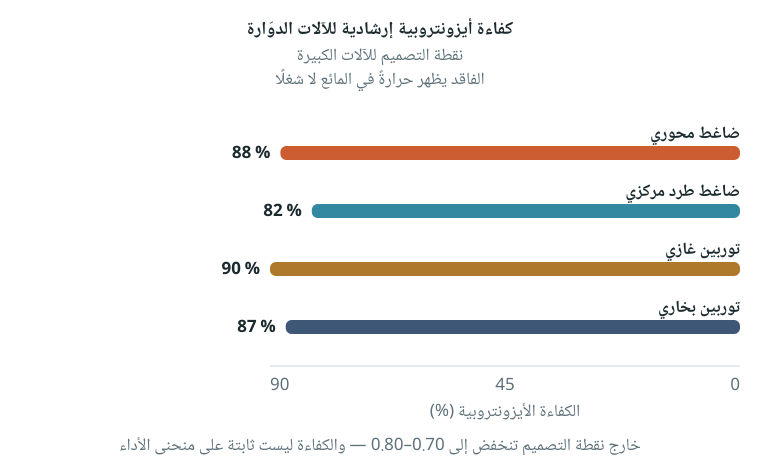

الكفاءة الأيزونتروبية
الكفاءة الأيزونتروبية تقارن الشغل الفعلي بالشغل في مسار مثالي عديم الاحتكاك: للضاغط η = (h₂s−h₁)/(h₂−h₁). قيمتها 0.80–0.90 في الآلات الدوّارة، وما يفقده الاحتكاك يظهر حرارةً في المائع لا شغلًا.
الضاغط المثالي يرفع الضغط في مسار أيزونتروبي (عديم الاحتكاك ولا تبادل حراري)، وحرارة الخروج المثالية تُحسب من P₂/P₁ ودرجة الدخول: T₂s = T₁·(P₂/P₁)^((k−1)/k). لكن الآلة الحقيقية تحتاج شغلًا أكبر بسبب الاحتكاك واضطراب الطبقة الحدّية، فيكون الخروج أسخن من المثالي عند الضغط نفسه. الكفاءة الأيزونتروبية هي نسبة الشغل المثالي إلى الشغل الفعلي: η_c = (h₂s − h₁)/(h₂ − h₁) للضاغط، وتنعكس النسبة للتوربين: η_t = (h₁ − h₂)/(h₁ − h₂s). قيمتها في الضواغط المحورية 0.85–0.90، وفي التوربينات الغازية 0.88–0.92، وهي مقياس جودة التصميم لا مقياس كفاءة الديناميكا الحرارية الكلية. ومنها يخرج الفاقد حرارةً في المائع: الشغل الزائد يرفع درجة الحرارة ويقلّل الحرارة المفيدة في غرفة الاحتراق اللاحقة.
كيف تعمل الظاهرة؟
الاحتكاك داخل مجاري الشفرات يحوّل جزءًا من الشغل الميكانيكي إلى حرارة داخل المائع نفسه، وكذلك اضطراب الطبقة الحدّية والانفصال عند المناطق الحرجة. النتيجة أن الإنتروبيا ترتفع في المسار الحقيقي بخلاف المثالي، وترتفع معها الحرارة النهائية عند الضغط نفسه. ولذلك تُعرَّف الكفاءة بنسبة فروق الإنثالبي إلى النقطة الأيزونتروبية، فتقيس مباشرةً ما خسرته الآلة من شغل مثالي.
العلاقة بالأرقام
هواء بـk = 1.4 وT₁ = 300 كلفن ونسبة ضغط 3: T₂s = 300×3^0.2857 = 410.7 كلفن. بكفاءة 0.85 تكون الحرارة الفعّالة T₂ = 300 + (410.7 − 300)/0.85 = 430.2 كلفن، والشغل cp(T₂ − T₁) = 1.005×130.2 = 131 كيلوجول/كغ مقابل 111 كيلوجول/كغ للمثالي؛ الفارق 20 كيلوجول/كغ يظهر حرارةً لا شغلًا. ولو كانت الكفاءة 0.75 لصار الشغل 148 كيلوجول/كغ، أي 13% زيادة في قدرة المحرك المطلوبة.
مفاهيم متقاربة
الكفاءة الأيزونتروبية ليست الكفاءة البولتروبية: البولتروبية تتبع مسارًا فعليًّا بأسّ ثابت ولا تحتاج نقطة مرجعية، وتُستعمل في التبريد عند درجات منخفضة وفي الآلات ذات التبريد الوسيط. وليست الكفاءة الميكانيكية التي تقيس فقد المحامل والأختام، ولا الكفاءة الحجمية التي تقيس التسرّب، ولا كفاءة الاحتراق. كل واحدة تُقاس بمؤشر مستقل، ومحاولة استعمال رقم واحد لكل الفواقد تُخفي موقع الخلل.
حدود التطبيق
تعريف الكفاءة يعتمد على اختيار نقطة مرجعية: من الدخول إلى الخروج (overall) أو مرحلة بمرحلة (small-stage). وفي الغازات الحقيقية عند ضغوط عالية يجب استعمال الإنثالبي من جداول الخواص لا cp ثابتًا، وإلا خرجت أرقام خاطئة عند نسب الضغط الكبيرة. وفي التبريد تعطي هذه الكفاءة قيمًا منخفضة اصطناعيًّا لأن جزءًا من الحرارة يُزال بالتبريد، فيجب عندها استعمال معيار آخر.

| الكمية | القيمة | المصدر |
|---|---|---|
| نسبة الضغط في المثال | 3 بلا وحدة | [1] |
| الحرارة الأيزونتروبية للخروج | 410.7 كلفن | [1] |
| الشغل الفعلي بكفاءة 0.85 | 131 كيلوجول/كيلوغرام | [2] |
| صيغة كفاءة الضاغط | η_c = (h₂s − h₁)/(h₂ − h₁) بلا وحدة | [3] |
المصادر
- 1 Isentropic Flow — The Engineering ToolBox. www.engineeringtoolbox.com/isentropic-flow-d_630.html · اطُّلع عليه 2026-11-19
- 2 Isentropic process — Wikipedia (الإنجليزية). en.wikipedia.org/wiki/Isentropic_process · اطُّلع عليه 2026-11-19
- 3 15.2 The First Law of Thermodynamics and Some Simple Processes — OpenStax. openstax.org/books/college-physics-2e/pages/15-2-the-first-law-of-thermodynamics-and-some-simple-processes · اطُّلع عليه 2026-11-19
استشهد بهذا المصطلح
الصيغتان مبنيتان من بيانات الصفحة نفسها: العنوان والتاريخ ورابط النسخة المنشورة.
الكفاءة الأيزونتروبية. (2026). ديوان المعرفة — انفراد. https://infiradev.com/diwan/terms/isentropic-efficiency.html
@misc{isentropic-efficiency2026,
title = {الكفاءة الأيزونتروبية},
howpublished = {{ديوان المعرفة — انفراد} — مرجع علمي عربي},
year = {2026},
url = {https://infiradev.com/diwan/terms/isentropic-efficiency.html},
urldate = {2026-11-19},
note = {مراجعة علمية: عبدالله الهويدي — مراجعة في تطبيق انفراد}
}
راجعه: عبدالله الهويدي — مراجعة في تطبيق انفراد · 2026-11-19 · آخر تحديث 2026-11-19